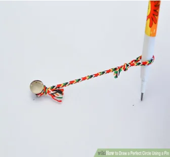
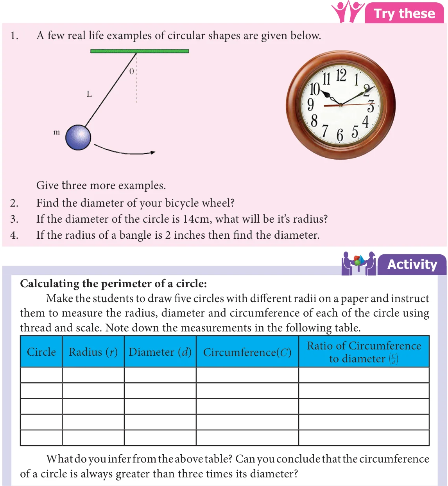

Circle
In our daily life, we come across circular shapes in various places. For understanding of circular shapes, first let us see how to trace a circle through an activity.
Activity

Put a pin on a board, put a loop of string around it, and insert a pencil into the loop. Keep the string stretched and draw with the pencil. The pencil traces out a circle.
What happens if we change the position of the pin? Do we get the same circle or a different circle? Can we make the string longer? Do we get a circle of the same size? Can we change the pencil to a pen? What happens to the circle? Yes, changing the pen to pencil or sketch pen will only change the colour of the circle but changing the position of the pin and length of the string will change the place where the circle is drawn and also the size of the circle. These two quantities namely, the position of the pin and the length of the string are important to specify the circle.
The position of the pin on the board is the centre \((O)\) of the circle. The length of the string is the radius \((r)\) of the circle.
While tracing a circle, the two positions of the string which falls on a straight line is the diameter \((d)\) of the circle. It is twice the radius \((d = 2r)\).
